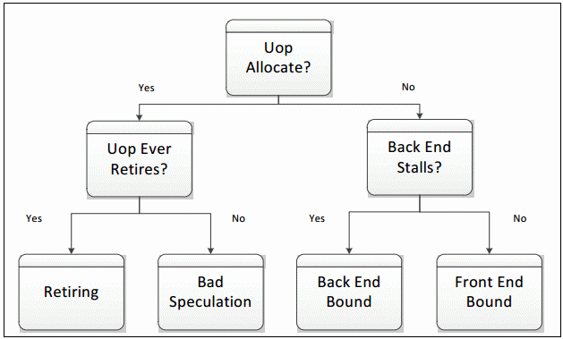
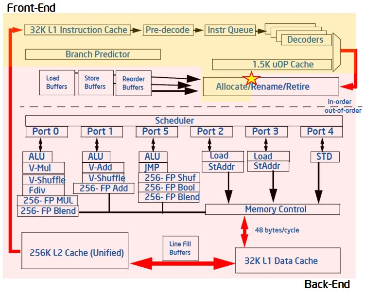
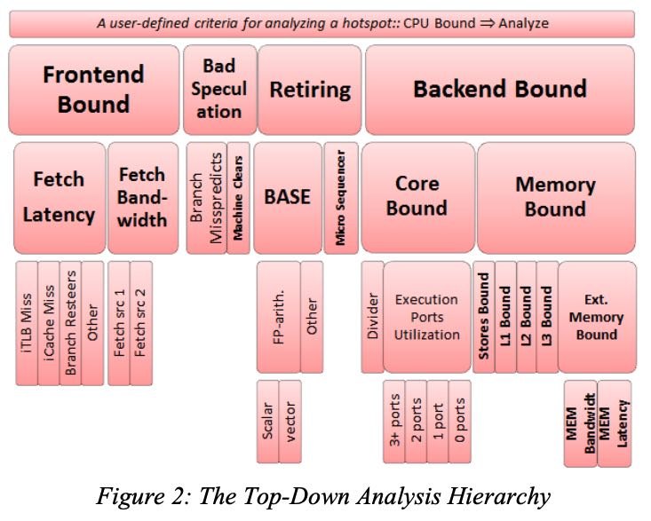

Top-down Microarchitecture Analysis Method
https://andrewei1316.github.io/2020/12/20/top-down-performance-analysis/
之前看过一本《Denis Bakhvalov - Performance Analysis and Tuning on Modern CPUs》关于性能优化的书，里面也提到了这种Top-Down分析方法，这里再结合Intel文档看看，后面有机会想试试VTune等工具实践下。
总的来说就是按照下图来做分析（大致如此）：
- uop是否已经分析，如果没有分配说明都还没有执行
- 如果执行了是否生效(retired). 如果生效率低，那么说明执行废指令（分支预测或者是pipeline flush due to Self-Modifying-Code, 可能和JIT有关系）
- 如果没有执行则可能发生在FE(取指阶段)和BE(执行阶段, 可能是计算也可能是访存)
并非有了很高的 Retiring 比例性能就没有提升空间了，依然可以看下下面几个指标
- Microcode Sequences 中的 Floating Point assists 是一种对性能很不友好的伪指令，应当尽可能避免
- 占比很高的非向量化（non-vectorized）代码可以优化成为向量化（vectorized）的代码。向量化代码本质上可以让单个指令（或者说 μop）完成更多的操作，从而提高性能。

另外文章里面还给出了CPU内部模型图，可能对Top-Down分析模式会有帮助，下图可以看到Allocate/Retire/FE/BE所在的位置和执行过程步骤。

这个是level-1的分析，了解是哪个部分bottleneck之后可以进行drill down, 查看level-2, level-3的指标. https://download.01.org/perfmon/TMA_Metrics.xlsx
估计在VTune里面能帮你自动分析，也有开源工具可以做这件事情 https://github.com/dirtysalt/pmu-tools
